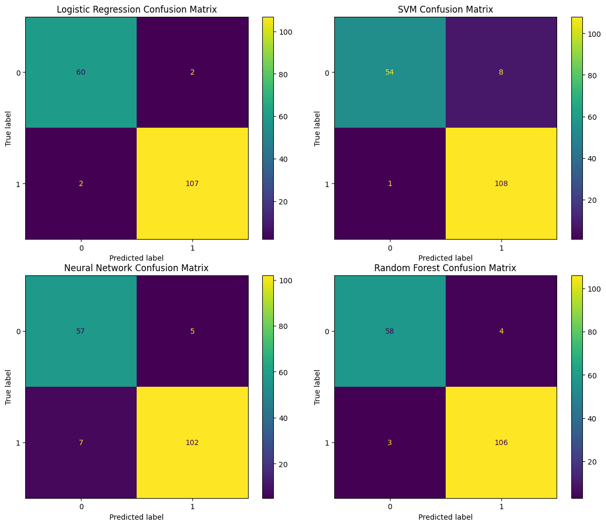
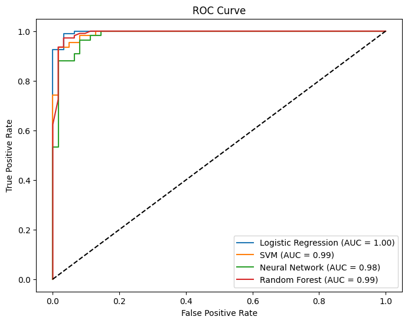

from sklearn.datasets import load_breast_cancer
from sklearn.model_selection import train_test_split
from sklearn.preprocessing import StandardScaler
import pandas as pd
# Load dataset
data = load_breast_cancer()
X = data.data
y = data.target
# Split dataset
X_train, X_test, y_train, y_test = train_test_split(
X, y, test_size=0.3, random_state=31
)
# Normalize (Standardize) features
scaler = StandardScaler()
X_train = scaler.fit_transform(X_train)
X_test = scaler.transform(X_test)Model Evaluation: Comparing Logistic Regression, SVM, Neural Network, Random Forest
We compare two classifiers: - Logistic Regression - SVM - MLP Classifier (Neural Network) - Random Forest
Using metrics: Accuracy, Precision, Recall, F1 Score, Confusion Matrix, and ROC-AUC.
Step 1: Load the Data
Step 2: Train the Models
from sklearn.linear_model import LogisticRegression
lr_model = LogisticRegression(max_iter=10)
lr_model.fit(X_train, y_train)
# from pprint import pprint
# pprint(lr_model.get_params())/usr/local/lib/python3.12/dist-packages/sklearn/linear_model/_logistic.py:465: ConvergenceWarning: lbfgs failed to converge (status=1):
STOP: TOTAL NO. OF ITERATIONS REACHED LIMIT.
Increase the number of iterations (max_iter) or scale the data as shown in:
https://scikit-learn.org/stable/modules/preprocessing.html
Please also refer to the documentation for alternative solver options:
https://scikit-learn.org/stable/modules/linear_model.html#logistic-regression
n_iter_i = _check_optimize_result(LogisticRegression(max_iter=10)In a Jupyter environment, please rerun this cell to show the HTML representation or trust the notebook.
On GitHub, the HTML representation is unable to render, please try loading this page with nbviewer.org.
LogisticRegression(max_iter=10)
from sklearn.svm import SVC
svm_model = SVC(probability=True, max_iter=10)
svm_model.fit(X_train, y_train)
# from pprint import pprint
# pprint(svm_model.get_params())/usr/local/lib/python3.12/dist-packages/sklearn/svm/_base.py:305: ConvergenceWarning: Solver terminated early (max_iter=10). Consider pre-processing your data with StandardScaler or MinMaxScaler.
warnings.warn(SVC(max_iter=10, probability=True)In a Jupyter environment, please rerun this cell to show the HTML representation or trust the notebook.
On GitHub, the HTML representation is unable to render, please try loading this page with nbviewer.org.
SVC(max_iter=10, probability=True)
from sklearn.neural_network import MLPClassifier
nn_model = MLPClassifier(hidden_layer_sizes=(50,), max_iter=10, random_state=42)
nn_model.fit(X_train, y_train)
# from pprint import pprint
# pprint(nn_model.get_params())/usr/local/lib/python3.12/dist-packages/sklearn/neural_network/_multilayer_perceptron.py:691: ConvergenceWarning: Stochastic Optimizer: Maximum iterations (10) reached and the optimization hasn't converged yet.
warnings.warn(MLPClassifier(hidden_layer_sizes=(50,), max_iter=10, random_state=42)In a Jupyter environment, please rerun this cell to show the HTML representation or trust the notebook.
On GitHub, the HTML representation is unable to render, please try loading this page with nbviewer.org.
MLPClassifier(hidden_layer_sizes=(50,), max_iter=10, random_state=42)
from sklearn.ensemble import RandomForestClassifier
rf_model = RandomForestClassifier(random_state=42)
rf_model.fit(X_train, y_train)
# from pprint import pprint
# pprint(rf_model.get_params())RandomForestClassifier(random_state=42)In a Jupyter environment, please rerun this cell to show the HTML representation or trust the notebook.
On GitHub, the HTML representation is unable to render, please try loading this page with nbviewer.org.
RandomForestClassifier(random_state=42)
Step 3: Evaluation Metrics
What is Accuracy?
Accuracy is the proportion of correct predictions:
\[ \text{Accuracy} = \frac{TP + TN}{TP + TN + FP + FN} \]
Can be misleading if classes are imbalanced.
from sklearn.metrics import accuracy_score
lr_acc = accuracy_score(y_test, lr_model.predict(X_test))
svm_acc = accuracy_score(y_test, svm_model.predict(X_test))
nn_acc = accuracy_score(y_test, nn_model.predict(X_test))
rf_acc = accuracy_score(y_test, rf_model.predict(X_test))
print(f"Logistic egression Accuracy: {lr_acc:.2f}")
print(f"SVM Accuracy: {svm_acc:.2f}")
print(f"Neural Network Accuracy: {nn_acc:.2f}")
print(f"Random Forest Accuracy: {rf_acc:.2f}")Logistic egression Accuracy: 0.98
SVM Accuracy: 0.95
Neural Network Accuracy: 0.93
Random Forest Accuracy: 0.96What are Precision, Recall and F1 Score?
- Precision: \(\frac{TP}{TP + FP}\)
- Recall: \(\frac{TP}{TP + FN}\)
- F1 Score: Harmonic mean of precision and recall
\[ F1 = 2 \cdot \frac{\text{Precision} \cdot \text{Recall}}{\text{Precision} + \text{Recall}} \]
from sklearn.metrics import precision_score, recall_score, f1_score
for name, model in [("Logistic Regression", lr_model), ("SVM", svm_model),("Neural Network", nn_model), ("Random Forest", rf_model)]:
y_pred = model.predict(X_test)
print(f"\n{name} Metrics:")
print(f"Precision: {precision_score(y_test, y_pred):.2f}")
print(f"Recall: {recall_score(y_test, y_pred):.2f}")
print(f"F1 Score: {f1_score(y_test, y_pred):.2f}")
Logistic Regression Metrics:
Precision: 0.98
Recall: 0.98
F1 Score: 0.98
SVM Metrics:
Precision: 0.93
Recall: 0.99
F1 Score: 0.96
Neural Network Metrics:
Precision: 0.95
Recall: 0.94
F1 Score: 0.94
Random Forest Metrics:
Precision: 0.96
Recall: 0.97
F1 Score: 0.97What is a Confusion Matrix?
A confusion matrix shows the breakdown of correct and incorrect classifications.
| Predicted Positive | Predicted Negative | |
|---|---|---|
| Actual Positive | True Positive (TP) | False Negative (FN) |
| Actual Negative | False Positive (FP) | True Negative (TN) |
from sklearn.metrics import ConfusionMatrixDisplay
import matplotlib.pyplot as plt
fig, axs = plt.subplots(2, 2, figsize=(12, 10))
ConfusionMatrixDisplay.from_estimator(lr_model, X_test, y_test, ax=axs[0, 0])
axs[0, 0].set_title("Logistic Regression Confusion Matrix")
ConfusionMatrixDisplay.from_estimator(svm_model, X_test, y_test, ax=axs[0, 1])
axs[0, 1].set_title("SVM Confusion Matrix")
ConfusionMatrixDisplay.from_estimator(nn_model, X_test, y_test, ax=axs[1, 0])
axs[1, 0].set_title("Neural Network Confusion Matrix")
ConfusionMatrixDisplay.from_estimator(rf_model, X_test, y_test, ax=axs[1, 1])
axs[1, 1].set_title("Random Forest Confusion Matrix")
plt.tight_layout()
plt.show()
What is the ROC Curve?
ROC = Receiver Operating Characteristic Curve
- Plots TPR vs FPR
- AUC = Area Under the ROC Curve Closer to 1 = better model.
from sklearn.metrics import roc_curve, auc
lr_probs = lr_model.predict_proba(X_test)[:, 1]
svm_probs = svm_model.predict_proba(X_test)[:, 1]
nn_probs = nn_model.predict_proba(X_test)[:, 1]
rf_probs = rf_model.predict_proba(X_test)[:, 1]
lr_fpr, lr_tpr, _ = roc_curve(y_test, lr_probs)
svm_fpr, svm_tpr, _ = roc_curve(y_test, svm_probs)
nn_fpr, nn_tpr, _ = roc_curve(y_test, nn_probs)
rf_fpr, rf_tpr, _ = roc_curve(y_test, rf_probs)
lr_auc = auc(lr_fpr, lr_tpr)
svm_auc = auc(svm_fpr, svm_tpr)
nn_auc = auc(nn_fpr, nn_tpr)
rf_auc = auc(rf_fpr, rf_tpr)
plt.figure(figsize=(8, 6))
plt.plot(lr_fpr, lr_tpr, label=f"Logistic Regression (AUC = {lr_auc:.2f})")
plt.plot(svm_fpr, svm_tpr, label=f"SVM (AUC = {svm_auc:.2f})")
plt.plot(nn_fpr, nn_tpr, label=f"Neural Network (AUC = {nn_auc:.2f})")
plt.plot(rf_fpr, rf_tpr, label=f"Random Forest (AUC = {rf_auc:.2f})")
plt.plot([0, 1], [0, 1], 'k--')
plt.xlabel("False Positive Rate")
plt.ylabel("True Positive Rate")
plt.title("ROC Curve")
plt.legend()
plt.show()